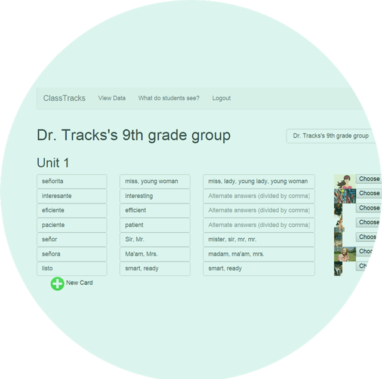

ClassTracks is...

engaging
Using a gamified interface, ClassTracks keeps track of student progress, adapts to their needs, and gives immediate, constructive feedback.

effective
Customize your vocabulary list modules in any language and writing system and assign them into units for your class. ClassTracks allows for multiple acceptable answers and makes it easy for teachers to associate each term with both visual and auditory cues, which research shows aid vocabulary retention.

efficient
Get instant, actionable data on each student’s progress and make data-driven decisions to plan your next lesson.